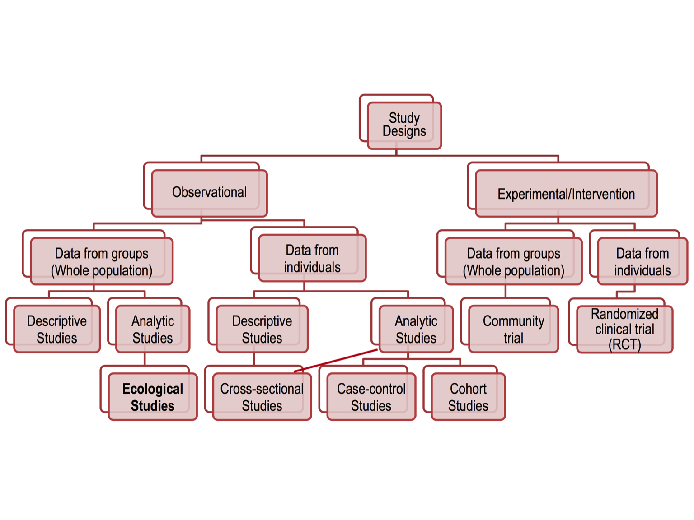
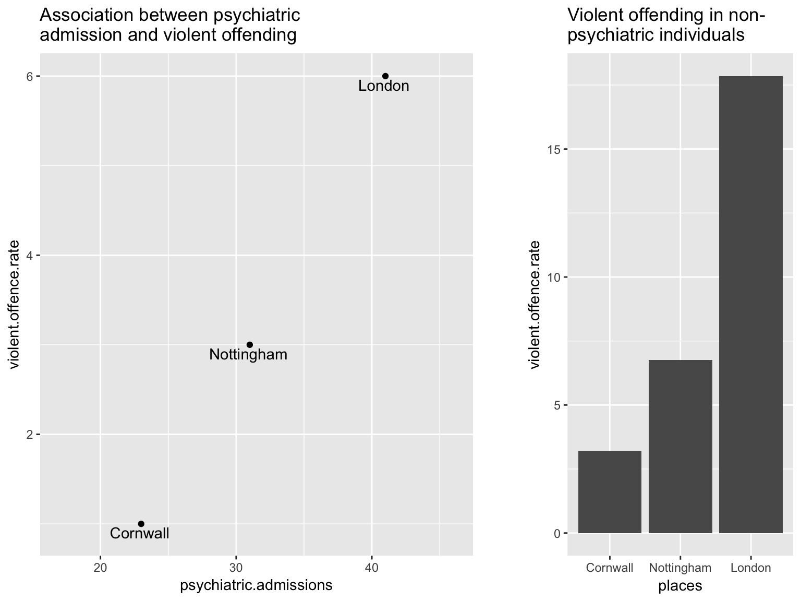
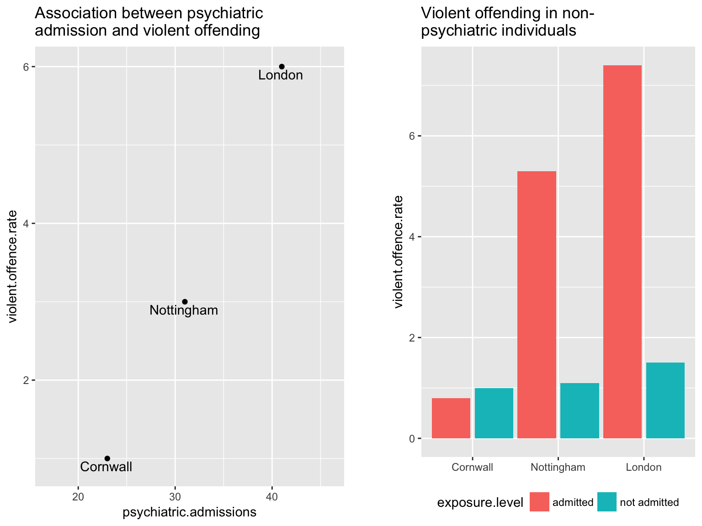
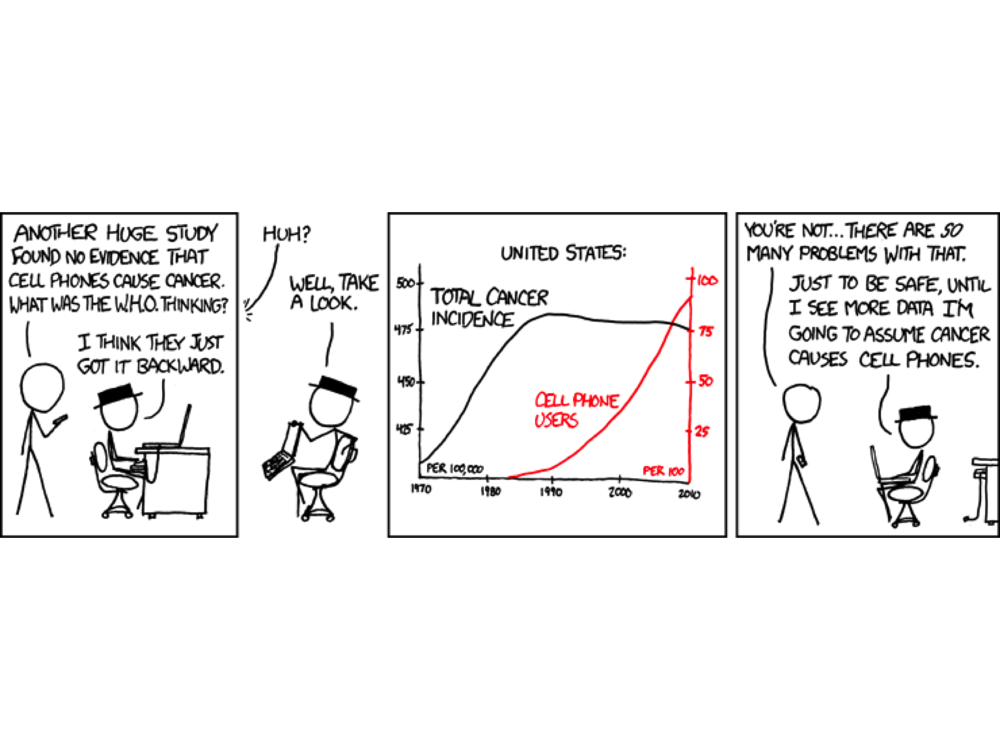
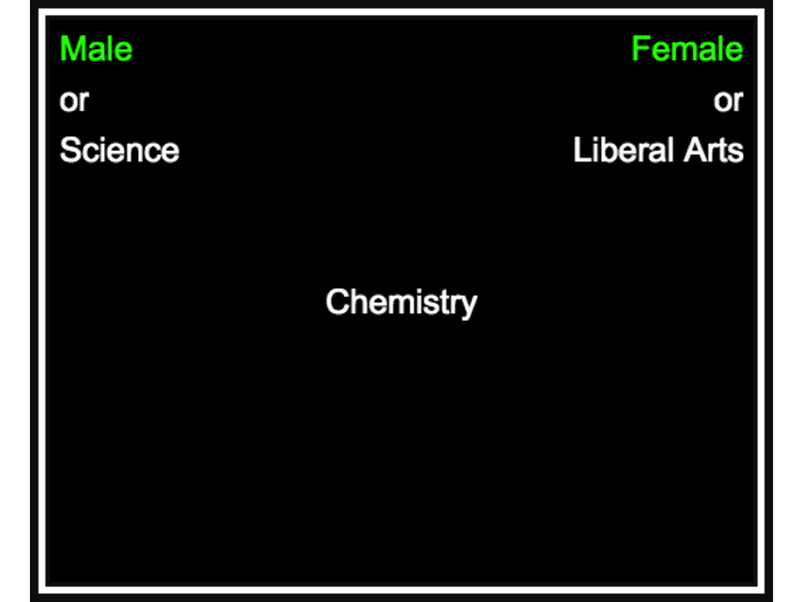

Ecological study designs and causality
Jan Freyberg
05/05/2017
Overview of lecture
Study design
- Recap of previous study designs
- Ecological studies
- Economic studies
- (Dis)advantages of these study designs
Causality
- Confounds on establishing causality
- Criteria for causality
- Methods for investigating causality
Recap: study design
Cross-section
- Single time-point
- Establishes prevalence
- Cheap, quick hypothesis generation
- Problems: reverse causality
Cohort
- Longitudinal: follow cohort over time
- Classical (E+/E-) or population (all)
- Establishes incidence, temporality
- Costly, attrition, no good long latency
Case-control
- Identify cases (O+) and controls (O-)
- Compare exposure levels
- Useful for testing hypotheses (quick)
- Selection + information bias problems
Ecological Studies
Classifying study design

What is ecological study design?
“In ecological studies the unit of observation is the population or community. Disease rates and exposures are measured in each of a series of populations and their relation is examined.”
Epidemiology for the uninitiated, The BMJ, Coggon, Rose & Barker
What is ecological study design?
- Usually analytical studies to probe the association between exposure and outcome
- No individual data is collected, so conclusions are only for groups as a whole
- Often takes advantage of routinely collected data
Example of ecological data
- Binary outcome data (catholic y/n) is continuous at the group level (% catholic)
- Exposure / Outcome data is incomplete (we don’t know if catholics are more educated)
- Unit size can vary, e.g. national level, community level, school level
- Often these overlap with administrative units that have some meaning, e.g. hospitals
Example of ecological study
Prevalence of food allergy in Israel & UK
| Country | Peanut Allergy | Sesame Allergy | Tree nuts | Egg |
|---|---|---|---|---|
| Israel | 0.17% | 0.13% | 0.13% | 0.43% |
| UK | 1.85% | 0.79% | 1.95% | 1.47% |
Du Toit et al., Early consumption of peanuts in infancy is associated with a low prevalence of peanut allergy, Journal of Allergy and Clinical Immunology, Volume 122, Issue 5, November 2008, Pages 984-991, ISSN 0091-6749, https://doi.org/10.1016/j.jaci.2008.08.039. (http://www.sciencedirect.com/science/article/pii/S0091674908016989)

Strengths of ecological designs
- Can often rely on routinely collected data (eg. census data)
- Can generate hypotheses
- Avoids ethical issues around the collection of individual medical records
- Sample sizes are often large, so group-level data can be more reliable than individual data
- May help uncover Exposure / Outcome associations not easily found at an individual level (eg. if variability is limited between individuals in the same area)
Weaknesses of ecological designs
- Grouped results can not be generalised to individuals (ecological fallacy)
- There may be systematic differences, or confounds, between measurement units (eg. national level)
- Often, it’s difficult to take account of these confounds because the data may not be available
- Boundaries may be arbitrary, which introduces noise into the data
- The multicolinearity of confounding factors is often higher at the group level
The ecological fallacy
An ecological fallacy is an unsupported extension of group-level data to individuals. For example, an association between GDP and homicide does not mean poor people commit murder more often.
Ecological bias occurs when an association at the group level is spurious. It could be generated by distortions of effects found at the individual level - due to either confounding factors or effect modification (or other effects!)
Example: confounding effects

Example: efect modification

Types of ecological studies
- geographical
- eg: mental hospital admission & aircraft noise (Abey-Wickrama et al. 1969)
- time-series
- eg: suicide rates vs. sunshine hours (Vyssoki et al. 2011)
- intervention (quasi-experimental)
- eg: effects of national minimum wage & depressive symptoms in the UK (Reeves et al. 2016)
Economic studies
What is an economic study?
Economic studies do not just assess the outcomes of interventions or exposures, but also the cost of interventions. This can be cost to the service provider or cost to the patient.
Usually, interventions are compared in relation to standard care or other existing interventions
Benefits of economic studies of economic studies
Economic studies:
- provide support for new interventions
- inform decision making for the healthcare provider
But:
- often fail to capture non-health-related benefits or downsides (eg. impact on career)
- may have limited generalisability, as always
- capturing costs can be difficult to do morally
Cost-effectiveness study example
Cost-effectiveness of an early intervention service for people with psychosis
| Cost | Early intervention | Standard care |
|---|---|---|
| Baseline, mean (s.d.) | ||
| In-patient days | 52.3 (94.4) | 44.0 (90.8) |
| In-patient costs | 8989 (16 232) | 7573 (15 612) |
| Total costs | 9747 (16 122) | 8256 (15 578) |
| 18-month follow-up | ||
| In-patient days | 35.5 (79.0) | 54.9 (93.6) |
| In-patient costs | 6103 (13 585) | 9442 (16 096) |
| Other costs | 5332 (3080) | 4544 (5322) |
| Total costs | 11685 (14 032) | 14062 (18 004) |
| MANSA | 59.3 (12.6) | 53.3 (12.4) |
| Full vocational recovery | 21 (32.8) | 13 (21.0) |
Causality
The causality problem

The causality problem
- Research enables the identification of associations, but not causality
- Alternatives to causality: chance, bias, confounding factors
- We usually lack details about the mechanisms of causal pathways
Establishing causality
Bradford-Hill criteria for causality
- Temporal Sequence (can be reversed)
- Strength of association (after accounting for confounding factors)
- Consistency of association (across samples, study designs and time)
- Biological gradients (eg. dose-dependent response)
- Specificity (exposure leads to one outcome)
- Biological plausability (what would the pathway be?)
- Coherence (with existing knowledge)
- Experiment (is it reversible in an RCT?)
- Analogy (are there other, similar associations?)
Nuances in causality: component causes
- A single outcome may have multiple causal factors
- eg. multi-genetic outcomes such as autism
- different cases may have different causal factors, which can (but don’t have to) overlap
Nuances in causality: sufficient causes
- A single exposure or single set of exposures will inevitably lead to an outcome
- eg. three copies of chromosome 21 inevitably lead to Down syndrome
- This often refers to a minimum set of factors required
Nuances in causality: necessary causes
- A factor is necessary if it has to be present for the outcome to occur
- This does not mean an outcome will always occur when factor is present
Nuances in causality: necessary and sufficient
- Fulfils both of the above: an outcome occurs if and only if a factor is present
- Very rare in psychiatry
Causation in ecological studies
In order to examine a particular exposure you must examine samples that are likely to vary with regard to the exposure. This makes ecological studies convenient.
A live example: an ongoing project
Implicit association test

Implicit association across Europe
By popular request, same data with a continuous colour scheme https://t.co/BPD3FOYR3z pic.twitter.com/JyoRgxrB7P
— Tom Stafford (@tomstafford) May 3, 2017
Institutional imbalance across Europe
@JacekBielinski @tomstafford @ValuesStudies Yeah, and other indicators as well, such as our institutional imbalance measure pic.twitter.com/8V9iFMg2SL
— Andreas Hövermann (@luurnpa) May 4, 2017
Link between institutional imbalance and racial bias
@tomstafford @JacekBielinski @ValuesStudies quick test: .50 correlation of this implicit bias score with institutional imbalance pic.twitter.com/kV8GNi4L4n
— Andreas Hövermann (@luurnpa) May 4, 2017
What can we learn from this?
- There is an association between racial bias and institutional imbalance
- This may be confounded by other factors, such as poverty or immigration levels, or simply an East-West divide
- There may be a modification effect, such that only when faced with institutional imbalance do individuals develop racial biases
- We don’t know whether this effect is driven by high SEM groups or low SEM groups
- It may also be driven by hidden factors such as alcohol dependency, etc.